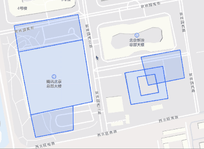
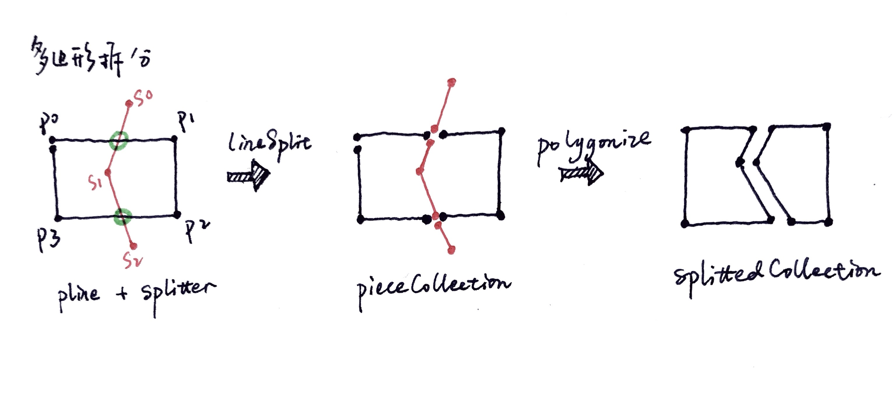
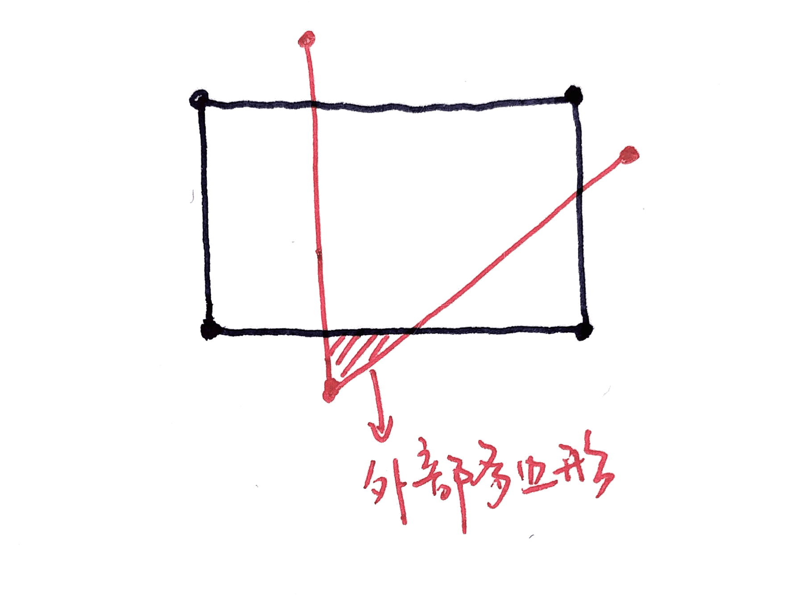
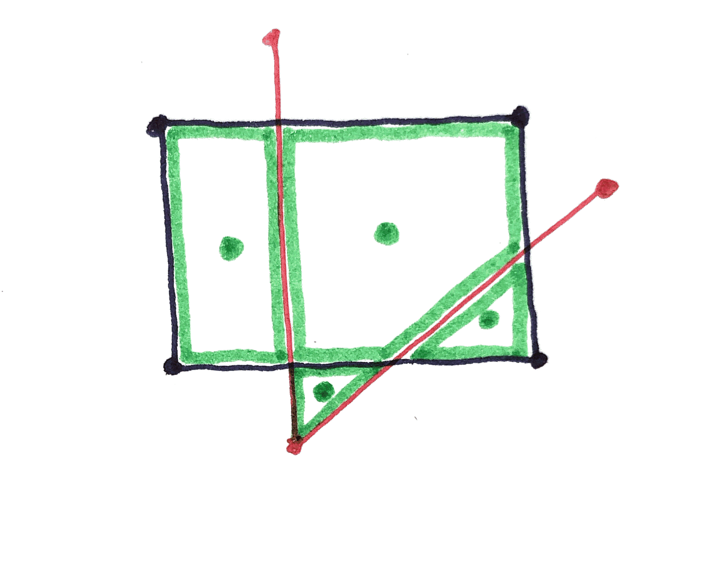
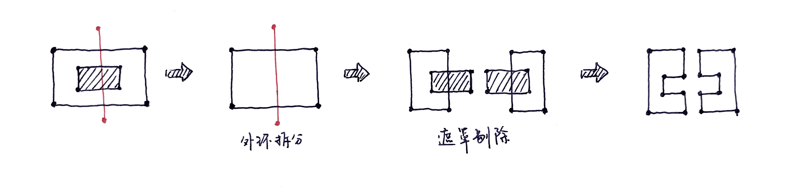
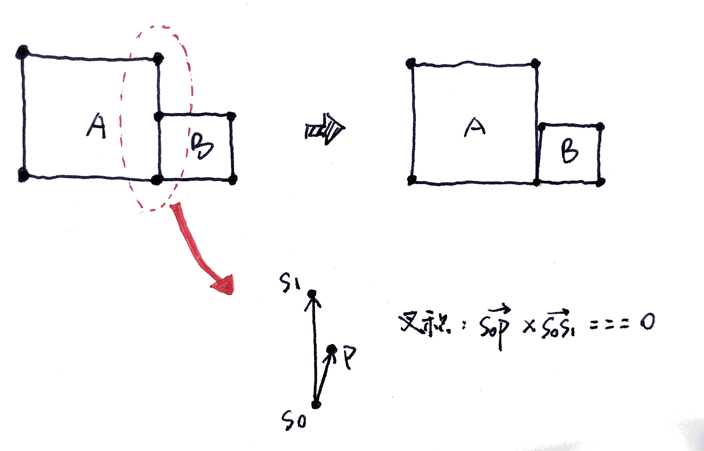
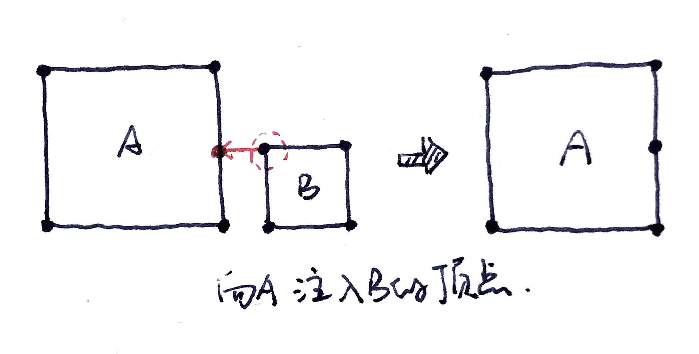
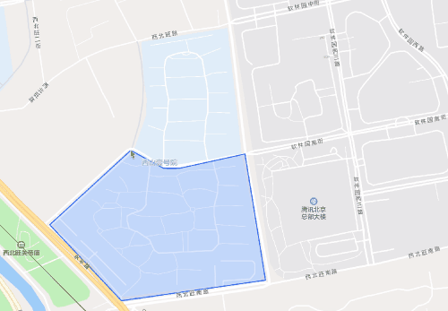
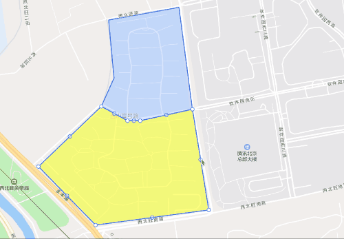

JSAPI GL近期为支持物流行业实现了几何图形编辑器，用户可通过编辑器接口进行点、线、面、圆的绘制和编辑。在物流行业中常见的使用场景是配送区域及地理围栏的绘制，常会有对已有区域进行拆分或者合并的需要，所以编辑器也提供了相应的功能。本文介绍了如何基于Turf实现多边形的拆分及合并。
背景介绍
多边形的拆分合并
多边形的拆分是指将多边形沿着线切分为几个多边形。如下图所示，不仅可以沿线一分为二，当线与多边形有多段相交时也可以分为多份，另外当多边形带洞（环多边形）时也可以在拆分后保持洞的形状。

多边形的合并是指将多个多边形合并为一个多边形，其前提条件是多边形之间有交叉区域或者共边。如下图所示，完全共边或者部分共边都可以合并，当有交叉时会贯通交叉部分。

Turf.js
不难发现，多边形的拆分合并中会有大量且复杂的几何计算，包括点、线、面相互之间的相交、包含等计算。不过我们并不需要造轮子，可以使用Turf.js完成大部分的基础计算。Turf是由mapbox推出的空间几何计算库，常用于地理空间内的几何关系分析，功能非常强大，具体功能可见Turf.js | Advanced geospatial analysis。
可是Turf.js目前还没有提供多边形的拆分方法，另外多边形的合并虽然已有union方法，但在实际应用中也无法很好解决部分共边的多边形的合并问题，所以只能在Turf的基础上自行实现符合业务需求的拆分合并功能。
多边形的拆分
基础方案
多边形拆分的核心思想是找到切割点，所以线对面的切割可以简化为线对线的切割。两条线互相切割得到子线段，将子线段互相组合形成多边形。

如上图所示，待拆分的多边形记为polygon，切割折线记为splitter。拆分步骤如下：
- 面化为线：
polygon从起点解开可以形成路径为[p0, p1, p2, p3, p0]的折线pline - 线互相切割：Turf提供了
lineSplit方法，可以使用点或者线将一条折线切分为几部分。利用该方法可以将pline与splitter互相切割，得到子线段集合pieceCollection - 线组合为多边形：Turf提供了
polygonize方法，将一组折线互相拼接组合成多边形。利用该方法可以将pieceCollection组合成多个多边形splitedCollection
这方案看似可行，实则有以下问题：
pline与splitter互相切割后得到的切割点不一致，导致polygonize无法将其拼接在一起切割线在多边形外的部分会形成外部多边形，如下图所示

解决切割点不一致问题
上文所述第一个切割点不一致的问题是指，使用线A切线B得到的切割点与使用线B切线A得到的切割点不同。
可以看看Turf的源码是如何实现lineSplit的：1
2
3
4
5
6
7
8
9
10
11
12
13
14
15
16
17
18
19
20
21
22
23
24function lineSplit(line, splitter) {
...
var lineType = getType(line);
var splitterType = getType(splitter);
...
// remove excessive decimals from splitter
// to avoid possible approximation issues in rbush
var truncatedSplitter = truncate(splitter, {precision: 7});
switch (splitterType) {
case 'Point':
return splitLineWithPoint(line, truncatedSplitter);
case 'MultiPoint':
return splitLineWithPoints(line, truncatedSplitter);
case 'LineString':
case 'MultiLineString':
case 'Polygon':
case 'MultiPolygon':
return splitLineWithPoints(line, lineIntersect(line, truncatedSplitter));
}
}
代码中truncate方法是用于保留指定位数的小数，即splitter被限制了精度，所以pline和splitter交换位置后实际计算中的坐标点就发生了变化，导致了不一致的问题。
如何保证两者一致？可以发现用线B切线A时，实际上是先计算线B与线A的交点，再使用splitLineWithPoints方法用这些交点对线A进行切割。那么先计算好两条线的交点，再用交点分别对两条线进行切割，就可以保证切割点的一致了。实现方法如下：1
2
3
4
5
6
7
8
9
10
11
12
13
14
15
16
17
18
19// truncate
let truncatedSplitter = truncate(splitter, {precision: 7});
// compute intersects of two lines
let intersectCollection = lineIntersect(outerLine, truncatedSplitter);
if (intersectCollection.features.length < 2) {
return null;
}
// transform FeatureCollection[Point] to Feature[MultiPoint]
let intersectCombined = combine(intersectCollection).features[0];
// split lines with points
let outerPieceCollection = lineSplit(outerLine, intersectCombined);
let splitterPieceCollection = lineSplit(truncatedSplitter, intersectCombined);
// polygonize pieces
let pieceCollection = featureCollection(outerPieceCollection.features.concat(splitterPieceCollection.features));
let polygonCollection = polygonize(pieceCollection);
解决外部多边形问题
简单来说只要能筛选出在原大多边形内部的小多边形就好了，Turf提供了booleanContains、booleanDisjoint、booleanWithin等方法用于判断点、线、面的位置关系。但是由于小多边形的部分顶点是在原多边形的边线上计算出来的，且精度有限，位置关系非常微妙，计算时其落在多边形内外都有可能，所以误判率极高。
但是多边形的形心就没有这个问题了，在当前的场景下，我们无需判断小多边形的每个顶点是否都落在原多边形内，只要其形心落在原多边形内即可。

实现如下：1
2
3
4
5// filter polygons in outer poly
let innerPolygons = polygonCollection.features.filter(polygon => {
let center = centroid(polygon);
return booleanWithin(center, outerPolygon);
});
环多边形的拆分
环多边形是指内部带“洞”的多边形，其拆分时有两种情况，一是拆分线穿过了洞，那么洞就变成了外轮廓，二是拆分线没有穿过洞，那么洞还整个保留。但是这样的思考方式容易引导我们去将洞也进行拆分，然后再与外环拆分后的片段进行拼接。
还能有更简单的做法，将洞作为遮罩。即在拆分时只对外环多边形进行拆分，在拆分完成之后对小多边形进行遮罩剔除。如下图所示。

遮罩的剔除可以使用Turf的difference方法，具体实现如下：1
2
3
4
5
6
7
8let diffedPolygons = innerPolygons.map(polygon => {
let diff = polygon;
featureEach(holeCollection, (hole) => {
diff = difference(diff, hole);
});
return diff;
});
至此即可完成多边形的拆分功能啦。
多边形的合并
turf.union
Turf提供union方法可以对有交集的多边形进行合并，可以处理完全共边、部分压盖、包含的情况，环多边形也是可以处理的。但是在处理部分共边的多边形时，仍然存在点、线关系判定没有容限的问题，导致点被判定在线外而无法完全合并。
这里先简单介绍一下判断点、线段关系的计算方法，用P表示点，S0和S1两点构成线段，那么首先判断向量P-S0和S1-S0的叉积（叉积表示其构成平行四边形的面积）是否为0，然后判断P是否在S0、S1两点之间。问题就出在叉积是否为0这一步，由于点坐标都是高精度浮点数，叉积很难严格等于0，一般会设定一个较小容限值，只要叉积绝对值小于容限值即可判定为点在线上。

部分共边多边形的合并
已定位合并失败的原因，但是没办法直接修改union的源码，因为Turf在union的实现上其实也使用了外部库martinez-polygon-clipping。不过可以转换思维方式，将部分共边的情况转换为完全共边，再交给union进行合并。这个转换过程我将其称为点注入，将多边形B的顶点注入到多边形A中，即遍历B的顶点进行判断，若其在A的某个线段上且不是线段端头，就将其插入到A的路径中。A与B互相注入顶点之后，所有部分共边的边线都变成完全共边了。

实现过程如下，其中没有使用booleanPointOnLine，而是基于其实现了isPointOnLine，一方面在点线关系判断时加入了容限值，同时排除了所有的端点，另一方面返回值里不仅包含了bool说明点是否在线上，同时还有index属性说明点在线的哪个线段上，以方便将其插入路径中：1
2
3
4
5
6
7
8
9
10
11
12
13
14
15
16/**
* 将点注入到线上
* @param {Feature[LineString]} line
* @param {FeatureCollection} pointCollection
*/
function injectPointsOnSide(line, pointCollection) {
let coords = getCoords(line);
featureEach(pointCollection, (point, index) => {
let isOnLine = isPointOnLine(point, line, {
ignoreVertices: true
});
if (isOnLine.bool) {
coords.splice(isOnLine.index + 1, 0, getCoord(point));
}
});
}
至此即可完成多边形的合并功能啦。
产品推广
在JSAPI GL上实现的图形编辑器集成了几何图形的绘制、编辑、删除功能，相较于JSAPI v2功能更加完善且便于使用。该功能将于2月初上线官网，欢迎使用～
JavaScript API GL | 腾讯位置服务
注：GIF图片较模糊且闪烁，不代表真实效果。

